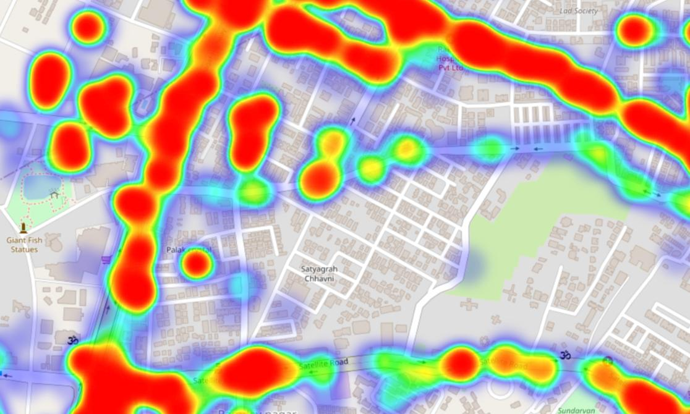
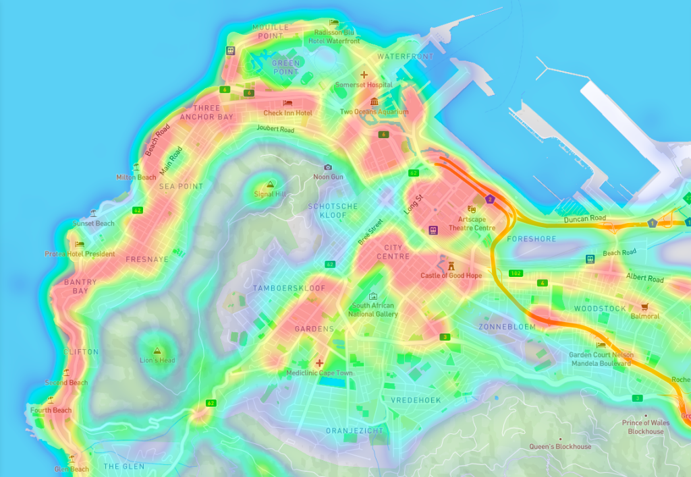

LiveTrack
March 2025 - April 2025

ROLE
Product Designer
User Researcher
SKILLS
User Research
Competitor Analysis
Prototyping
TOOLS
Figma
Perplexity
ChatGPT
Microsoft Excel
TYPE
Solo Design Project
OVERVIEW
For many young adults, going to the gym is a part of staying healthy and regulating their stress. However, overcrowded gyms can disrupt that experience and even cause anxiety within new gym members. Current solutions only address crowd levels and not crowd density, unintentionally misleading the users. Facing this challenge in my personal life, I decided to design a feature that allows users to see the crowd distribution throughout the gym, right at their fingertips.
THE SOLUTION

LiveTrack is a feature built into any gym app that helps gym-goers get a clear sense of how busy the gym is at any given time. It shows a real-time heatmap of the gym floor and informs the users how crowded each section is and even breaking down the activity within specific zones like cardio, strength, or stretching. Instead of showing up and hoping for the best, users can check LiveTrack before heading out, helping them plan ahead of time, avoid frustration, and stay on track with their fitness goals.
USER RESEARCH SUMMARY
I started with secondary research using Perplexity, which gave me quick insights along with source links that allowed me to cross-reference for reliability. For my primary research, I created a Google Form and collected responses from around 15 users. These were some of the key responses:
What emotions do you feel when you arrive at the gym and find it too crowded?
"Just annoyed because it takes too long"
"Depends if I want to socialize with others or if I want to lock in"
"I feel good at the gym, I don't care too much about the people there"
"I feel frustrated, however, since I made the effort to go to the gym, I'll have to continue my session regardless of how crowded it is"
"I feel bored, waiting takes too long"
How does gym overcrowding impact your motivation to work out?
"It reduces my motivation"
"Doesn't really imapct my motivation aspect, only the outcome of my actual workout. However, seeing an empty gym allows me to focus more"
"I avoid going at peak times, so it affects when I go"
"There are pros and cons to overcrowding, with the con being that I get demotivated since the machines I want are being used and dumbbells or barbells are also being used. It sometimes motivates me since I want to become stronger and bigger to sort of intimidate them to speed up their workouts"
"Makes me feel bored and want to go to another gym with less people"
PAIN POINTS
After conducting the user research, 4 main pain points emerged, which set the foundation for my solution:
01
Waiting for Equipment
Users feel frustrated when machines, squat racks, or free weights are occupied, leading to wasted time.
02
Unpredictable Crowds
Users can't always predict when the gym will be too full, disrupting their routine.
03
Discomfort and Stress
Some users feel anxious, irritated, or demotivated when the gym is too packed.
04
Rushed Workouts
There is pressure to finish workouts quickly due to crowds or waiting time, which cuts the workout shorter and reduces its effectiveness.
PRE-USER JOURNEY MAP

Looking at this journey, it's clear how quickly a motivated gym visit can turn into a disappointing experience. What stood out most was how users genuinely try to plan ahead, but still end up frustrated because the information they rely on isn't accurate or detailed enough, especially when it comes to specific zones like cardio.
POST-USER JOURNEY MAP

THE HEATMAP


I used the concept of heatmaps and applied it to the gym’s floor plan, showing the crowd distribution in the gym. This inspiration came from the fact that I was seeing these heatmaps everywhere for traffic. I applied the same concept but on a much smaller scale.
HOW THIS WORKS